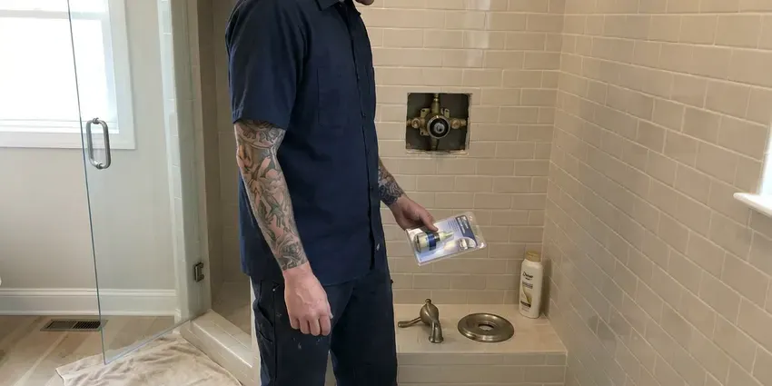
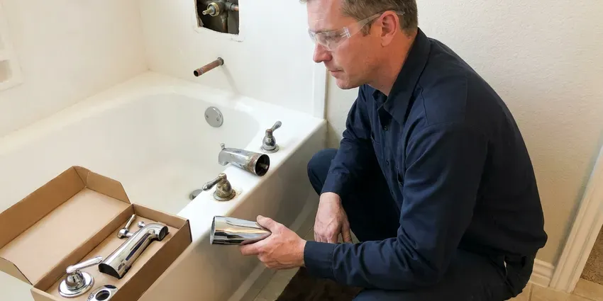

Toilet Installation in Albany, NY
HCL Plumbing sets toilets in Albany, NY on a new seal with stainless bolts, then runs several test flushes before we pack up.
- Rough-In Checked Before We Set
- Flat Labor Pricing
- New Flange When Needed
- Local Albany Plumbers

Schedule a Toilet Install in Albany, NY
Most installs can be booked within a day or two.
Toilet Installation for New and Remodeled Baths in Albany, NY
HCL Plumbing handles the whole toilet install, from shutting off the old angle stop to the last test flush. We pull the old toilet, scrape the flange clean and check it for cracks or rust. If the flange is broken or sits below the finished floor, we repair or replace it before a new wax ring or foam seal goes on, because no seal can make up for a bad flange. After that, the bowl gets set level.
Some of what we do:
- Old toilet removal and haul-away
- Braided supply line and quarter-turn stop hookups
- Rough-in measuring for new floors and additions

Additional Bathroom Plumbing Services in Albany, NY
From toilets to showers, our bathroom plumbing team in Albany, NY repairs, installs, and replaces every fixture with clean, code-compliant work.




Professional shower repair, Albany


Customers
Why Choose HCL Plumbing for Toilet Installation in Albany, NY?
Installing a toilet looks simple until the bolts are overtightened and the porcelain cracks. We snug closet bolts by hand and finish with a quarter turn. China does not flex. A wrench used the way you would on a pipe fitting will split the foot of the bowl, and that crack can take weeks to start weeping.
- Level Mounting, A shimmed, level bowl keeps its seal and does not rock when you sit.
- Clean Work, Drop cloths down, old toilet bagged, and the bathroom cleaned before we leave.
- Local Expertise, We know the houses around Albany, from slab foundations to older cast iron drains.
Citywide Coverage
Across Albany, our dispatch can usually put a plumber at your door within a day. Same-day slots open up most mornings. Tell us the toilet model when you call, and we will check whether the rough-in and supply connection match before the truck leaves the shop.
Experienced Team
We have installed everything from builder-grade toilets to one-piece TOTO and Kohler models with skirted trapways. Their bolts are hidden. They mount with a bracket or adapter system instead of standard closet bolts, which means more measuring and more patience than a basic two-piece ever needs.
Safety-First Approach
Bidet seats and smart toilets bring electricity close to water. We check for GFCI protection first. If there is no outlet within reach, we do not run an extension cord across the floor; we bring in a licensed electrician to add one.
Trusted Certified Albany Plumbing Services Professionals
At HCL Plumbing, we are proud to offer certified plumbing services throughout Albany, NY. Those papers on the wall mean something. Our plumbers hold recognized industry credentials, and they follow strict safety and quality rules on every repair, installation and maintenance call we run.
Call Us Now PHCC Plumbing Contractor Recognition
PHCC Plumbing Contractor Recognition Better Business Bureau (BBB) Accreditation
Better Business Bureau (BBB) Accreditation Angi Certified Pro
Angi Certified Pro ISO 9001 Quality Management Certification
ISO 9001 Quality Management CertificationKinds of Toilet Installation in Albany, NY
Customer-Supplied Toilet Installation in Albany, NY
Bought the toilet yourself? Check the rough-in printed on the box first. We unbox it and look over the porcelain for shipping cracks before we pull your old one, since a hairline crack in the bowl or tank means it needs to go back to the store, not onto your floor. We bring the seal and stainless bolts.

Smart Toilet and Bidet Seat Installation in Albany
Bidet seats like the TOTO Washlet and Bio Bidet bolt onto most existing elongated bowls. Water comes from a T-valve at the fill line. Powered seats with warm water and a dryer need a GFCI outlet within a few feet, and if one is not there, we line up a licensed electrician before we mount anything. Non-electric seats take about thirty minutes.
Commercial Restroom Toilets in Albany, NY
Restaurants and offices get heavy-duty fixtures and accessible stalls built to code. A closed restroom costs a business money. We schedule commercial installs early in the morning or after hours, and we stage the fixtures and valves on site so each stall is down for as short a time as possible. We work with your GC on inspections.
Wall-Hung Toilet Installation in Albany, NY
Wall-hung toilets need a wall at least 2 by 6 deep, or a furred-out chase built in front of an existing 2 by 4 wall. The floor underneath stays open. That makes mopping easier and lets you set the bowl height anywhere within the carrier's range, which is handy for tall households or anyone who wants a comfort-height seat without a tall bowl. Service happens through the flush plate.
Low-Flow WaterSense Toilet Installation in Albany, NY
WaterSense toilets are capped at 1.28 gallons per flush, and some dual-flush models drop to around 0.8 for liquid waste. That adds up fast. A family of four swapping one old 3.5 gallon toilet can save thousands of gallons a year, and some water providers offer rebates worth checking. Pick a strong MaP rating.
Wall-Mounted Toilet Installation in Albany
Wall-mounted toilets hang off a steel carrier bolted to the floor inside the wall. The tank sits behind an access plate. The carrier holds the whole load, so its feet get anchored to slab or framing and it gets plumbed before any wall finish goes on. Plan on a remodel, not a swap.
High-Efficiency Toilet Installation in Albany, NY
High-efficiency toilets flush on 1.28 gallons or less, against 3.5 gallons or more for toilets from before the early 1990s. Look for the WaterSense label on the box. We steer customers toward models with a MaP score of 800 grams or higher, because a cheap low-flow bowl that needs two flushes saves nothing. Dual-flush models add a lighter half flush.

ADA-Compliant Toilet Installation in Albany
ADA toilets put the seat 17 to 19 inches off the floor, and the centerline sits 16 to 18 inches from the side wall. That spacing leaves room for a grab bar. Before anything is ordered we measure the drain, because shifting it to meet the ADA centerline means cutting into the floor. Elongated bowls are standard here.
Local Toilet Installation in Albany, NY
Searching for toilet installation near me in Albany, NY usually means a bathroom is out of commission or a remodel is waiting on the plumber. We can often be there within a day. Our trucks carry seals, bolts, flange repair rings and supply lines, so a normal install wraps up in one trip.
Toilet installers near you in Albany should be licensed and insured, and they should be willing to pull a permit when the job calls for one. Ask about both on the phone. Moving a toilet or adding a new bathroom usually needs a permit and an inspection, while swapping a toilet in the same spot usually does not. We tell you which applies.
HCL Plumbing at a Glance
- Fully licensed plumbing team covering Albany, NY
- Same-day appointments and 24/7 emergency response
- Clear written estimates, no hidden fees
- 4.8-star rated by 520+ New York customers
Albany Map
Albany Information
- Population
- 101,228
- Area codes
- 518/838/646
- Service area
- Albany and towns within a 40 mile drive
- Nearby
- Troy, Schenectady, Saratoga Springs, Glens Falls
New York has some of the oldest housing in the country, and many homes still have galvanized steel supply pipes and cast iron drains. Flange height, rough-in distance and a level bowl decide whether a toilet in Albany, NY stays dry under the floor.
Talk to a Plumber
Call HCL Plumbing for honest, reliable plumbing from people who know the trade in Albany, NY.
Our Specialized Plumbing Services in Albany, NY
At HCL Plumbing, we handle the full list of plumbing services across Albany, NY. We go from leak detection all the way to full system installations, for homes and commercial buildings, and we do it quickly at a fair price. Explore our core services below:


What to Expect From a Toilet Install in Albany, NY
We run every toilet install in your Albany, NY home the same way, start to finish, from the first measurement to the last flush.
Request a Quote
Call (716) 396-7101 with the toilet model or the kind you want. We give you a flat price before booking.
Old Toilet Removal
We close the stop, sponge the tank and bowl dry, and lift the old toilet out cleanly. We bag it and haul it away.
New Toilet Setup
The flange gets scraped and checked, a new seal goes on, and the bowl is set straight down onto stainless bolts. We shim it level before snugging the nuts.
Frequently Asked Questions About Toilet Installation in Albany
Most homeowners in Albany, NY pay $200 to $500 to have a toilet installed, fixture not included. A stubborn old toilet adds time. Bolts rusted solid have to be cut with a hacksaw or oscillating tool, and a cast iron flange that breaks during removal needs a repair ring, each of which adds labor.
TOTO and American Standard do well in independent flush tests, and Kohler is close behind, with parts at most supply houses. For a budget, Gerber and Mansfield hold up. The right pick depends on your rough-in and who uses the room.
Plenty of handy homeowners do. What goes wrong most is cranked-down bolts or a bowl that rocks. A cracked foot from overtightening can show up days later, and a rocking bowl lets water soak the subfloor out of sight. On new floors or wall-hung units, hire it out.
Homeowners set basic toilets all the time. Flange height and bolt torque are where it goes wrong. A flange that sits below the finished floor needs an extender or a thicker seal, and a nut tightened one turn too far can crack the base, so on new floors and wall-hung toilets a pro install is the safer bet.
All the major ones, including Kohler, TOTO, American Standard and Gerber. Feel free to run a model past us first. We can tell you which models have strong flush ratings and which ones use proprietary parts that are hard to find when a flapper or fill valve wears out years from now.
Start with the rough-in, since that decides which models fit at all. Then pick round or elongated. Elongated bowls are more comfortable but stick out about two inches farther, which can be a problem in a small half bath with the door swinging in. Check the MaP flush score too.
Yes, both. A basic non-electric bidet seat takes under an hour. Powered seats and smart toilets need a nearby GFCI outlet, and a licensed electrician adds one first when it is missing. We test the spray and heat functions before leaving.
It depends on the floor and the flange. On a sound flange, a same-spot swap is fair game for a handy owner. New tile, a low or broken flange, a wall-hung carrier, or a toilet that has to move are the jobs where a plumber saves you money, because mistakes there end up under the floor.
What People Are Saying About Our Plumbing Experts?

Robert G.
The camera showed a full break in our clay sewer line near the street. HCL Plumbing replaced it with a trenchless pipe burst, so the only digging was two small pits in the yard. They let us watch the footage before and after.
Sewer Line Replacement · Utica, NY
Mark T.
The floor drain in our office break room backed up every few weeks. The plumber ran a cable, then put a camera down and found roots at a joint about thirty feet out. Seeing it on the screen made the decision easy.
Drain Cleaning · Glens Falls, NYBrian W.
I smelled gas behind the dryer and called right away. The plumber found a corroded flex connector, replaced it, and pressure tested the whole line before turning the gas back on. He let me watch the gauge hold steady for fifteen minutes.
Gas Line Repair · Poughkeepsie, NY
Emily R.
The shutoff valve under our kitchen sink snapped off in my hand on a Sunday morning. HCL Plumbing had someone out by early afternoon. He replaced both angle stops with quarter turn valves and showed me where our main shutoff was, which I honestly did not know.
Plumbing Repair · Albany, NYLisa C.
Water was pouring out from under the washing machine on a holiday weekend. HCL Plumbing talked me through closing the valves over the phone and had a plumber at the house within ninety minutes. It was a burst fill hose.
Emergency Plumbing · Utica, NY
Daniel K.
A pipe burst in the garage ceiling at 11 at night. Someone answered on the second ring, and the plumber was in my driveway about fifty minutes later. He shut off the main, cut out the split section, and had water back on before 2 am.
Emergency Plumbing · Albany, NY